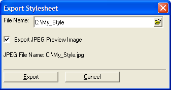
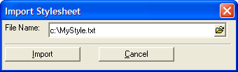

Importing and Exporting Stylesheets
Alpha Five lets you import and export Stylesheets. The exported Stylesheet is saved as a text file, with an optional JPEG preview image.
Exporting a Stylesheet
To export a Stylesheet:
In the Stylesheets dialog, select the Stylesheet you want to export.
Click the Export button.
When the Export Stylesheet dialog box appears, enter a File Name for the text file.
Select the Export JPEG Preview Image if you want to create a preview image for the Stylesheet.
Click the Export button.

Exporting a Stylesheet
Importing a Stylesheet
To import a Stylesheet:
In the Stylesheet Gallery, click the Import button.
When the Import Stylesheet dialog box appears, enter or browse for the Stylesheet (*.txt) you want to import.
Click the Import button.
